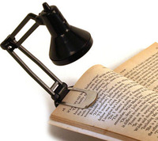
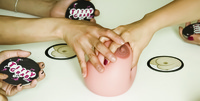

Sat, 24 Mar 2012 09:08:16 +0000
La máquina más tonta del mundo, ahora con Lego WeDo
La máquina más tonta del mundo, ahora con Lego WeDo
Esto me llena de emoción. La máquina más tonta del mundo fue el primer post que leí de NPC. Cuando la saga continuó con la actualización y el duelo descubrí que el MEV había trazado un plan divino para hacerme Continue reading.
Esto me llena de emoción. La máquina más tonta del mundo fue el primer post que leí de NPC. Cuando la saga continuó con la actualización y el duelo descubrí que el MEV había trazado un plan divino para hacerme feliz.
Robert Ferguson ha hecho su propia versión de la máquina más tonta del mundo usando Lego WeDo, un sistema de aprendizaje de conceptos básicos de robótica pensado para niños que no nos vendría mal a unos cuantos. No aporta nada nuevo a la idea original, pero lleva todo el peso de la nostalgia consigo.
A mí me ha hecho soltar una lagrimilla mañanera. Lo siento, tengo uno de esos días. Voy al sótano a empalar ratas a ver si me animo.
Visto en MAKE
Ver más: máquinas, tontas, tonterias
Seguir @NoPuedoCreer - @QueLoVendan
Fri, 23 Mar 2012 08:38:26 +0000
Un robot peluquero (más o menos)
Un robot peluquero (más o menos)
Vale, vale: el resultado no es espectacular. Pero por lo menos no te cuenta experiencias funestas con otros clientes ni su opinión sobre el estado de la economía global. El robot peluquero (Multi-Arm Unmanned Ground Vehicle para los amigos) ha Continue reading.
Vale, vale: el resultado no es espectacular. Pero por lo menos no te cuenta experiencias funestas con otros clientes ni su opinión sobre el estado de la economía global. El robot peluquero (Multi-Arm Unmanned Ground Vehicle para los amigos) ha sido desarrollado por la Intelligent Automation Inc y va directo al grano. O al cráneo. Nótese la sonrisa de pegatina que lleva la pobre víctima; doy mi brazo izquierdo a que el "voluntario" que se ha ofrecido para el experimento es un reo al que se le ha prometido la condicional.
Hace mucho que no voy a una peluquería por razones obvias. Así y todo, recuerdo como algo dramático el momento final, cuando veías todo lo que una vez fue tuyo ser recogido por una hedionda escoba empuñada por un tipo con palillo en la boca y contenías un grito final y una lagrimilla. El detalle del robot limpiador al final del video es lo que más me ha gustado; su rapidez es algo que me reconforta.
Y ahora, un órgano de gatitos.
Robot peluquero visto en IEEE Spectrum
Órgano de gatitos visto en The Presurfer
Ver más: peluquería, robots
Seguir @NoPuedoCreer - @QueLoVendan
Thu, 22 Mar 2012 12:53:46 +0000
Mini lámpara Anglepoise, para leer libros
Mini lámpara Anglepoise, para leer libros
Leer libros es bueno. Y ahora, tras la desbandada general después del demoledor primer párrafo, mi dirijo a los que os habéis quedado esperando que esto sea de vuestro agrado. Se trata de la mini-lámpara Tiny Tim, una versión en Continue reading.

Leer libros es bueno.
Y ahora, tras la desbandada general después del demoledor primer párrafo, mi dirijo a los que os habéis quedado esperando que esto sea de vuestro agrado.
Se trata de la mini-lámpara Tiny Tim, una versión en miniatura de la popular lámpara flexo Anglepoise.
Esta es especialmente ligera y, con el clip que incorpora, permite que sea acoplada al libro que estemos leyendo. Ideal para los que gustan de leer en la cama o en el coche.
Mide 17 cm. de altura (desplegada) y emite una luz potente gracias a su bombilla tipo LED.

Ver más: anglepoise, flexo, lámparas, leer, libros
Seguir @NoPuedoCreer - @QueLoVendan
Wed, 21 Mar 2012 12:30:17 +0000
Titty Grab (Agarra la Teta), el juego de mesa
Titty Grab (Agarra la Teta), el juego de mesa
Tensión, reflejos, agilidad y, sobre todo, mucho cachondeo. Titty Grab (Agarra la Teta) o, más coloquialmente "La Teta", es un juego de mesa en el que las risas están garantizadas. La culpa la tiene principalmente el elemento central del juego: Continue reading.


Tensión, reflejos, agilidad y, sobre todo, mucho cachondeo.
Titty Grab (Agarra la Teta) o, más coloquialmente "La Teta", es un juego de mesa en el que las risas están garantizadas.
La culpa la tiene principalmente el elemento central del juego: una teta de muy generosas dimensiones con un peso, tacto y aspecto de gran realismo. Podemos ver, en el vídeo, con qué vicio los participantes la manosean.
Esta atracción lúbrica que ejerce sobre los jugadores (y jugadoras también, no creáis) hace que el juego sea más complicado. Si sabemos controlar nuestro ímpetu, mantener la cabeza fría y las manos quietas, seremos vencedores.
El juego incorpora unas cartas con dibujos de tetas, culos y entrepiernas que serán la clave para poder triunfar. En las instrucciones se indica cuándo hay que ir a por la teta, y cuando reprimirse. Por ejemplo, si dos jugadores sacan una carta con la misma ilustración, sólo esos dos han de agarrarla. El que lo haga antes, gana esa mano. En caso de dudas, el que toca más pezón gana. También hay cartas "especiales", en plan "TODOS A POR LA TETA", "MÉNAGE A CARTAS", etc. Es fácil de aprender.
Esa es la base, a partir de aquí, el alcohol y la imaginación del grupo de amigos pueden configurar formas de juego más divertidas aún. Como, por ejemplo, una versión "Besa la teta", que incorporaría al juego un interesante factor, el "dolor".
Ver más: juegos de mesa, tetas, titty grab
Seguir @NoPuedoCreer - @QueLoVendan
Tue, 20 Mar 2012 15:19:03 +0000
Platillo volante estrellado en tu jardín
Platillo volante estrellado en tu jardín
Los platillos volantes tienden a estrellarse porque no son tan volantes como dicen. Normalmente lo hacen en parajes inhóspitos donde nadie pueda verlos excepto locos, vagabundos y agentes del FBI. A veces fallan y se dejan caer frente a un Continue reading.
Los platillos volantes tienden a estrellarse porque no son tan volantes como dicen. Normalmente lo hacen en parajes inhóspitos donde nadie pueda verlos excepto locos, vagabundos y agentes del FBI. A veces fallan y se dejan caer frente a un cualquiera y entonces ese tipo cambia de estatus social y pasa a ser considerado un loco vagabundo o un agente del FBI haciéndose pasar por un loco vagabundo. Vamos, que no hay forma de recibirlos con un café y unas pastas.
Ahora puedes darte el gustazo de tener tu propio platillo volante estrellado en el jardín. Uno pequeño, claro, de unos 80 centímetros de ancho por 55 de alto, pero lo suficientemente grande para que sea visto por todos. Los transeúntes te harán preguntas. Los vecinos te harán preguntas. Tu estatus social cambiará y ganarás el título de "tipo con un platillo volante estrellado en el jardín", que nunca está de más tenerlo para engordar el currículum y acceder a un puesto en el ministerio. No son muy exigentes, pero por si acaso.
Visto en The Green Head
Ver más: decoracion, jardines, ovnis
Seguir @NoPuedoCreer - @QueLoVendan